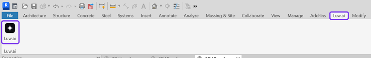
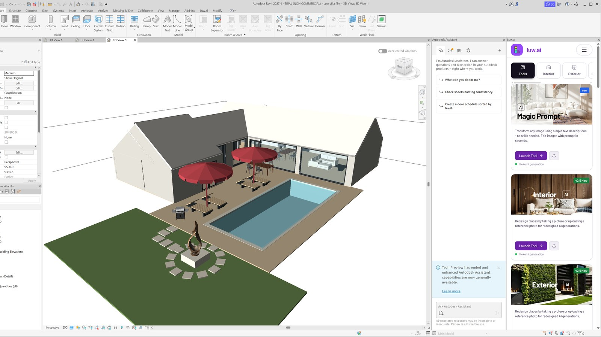
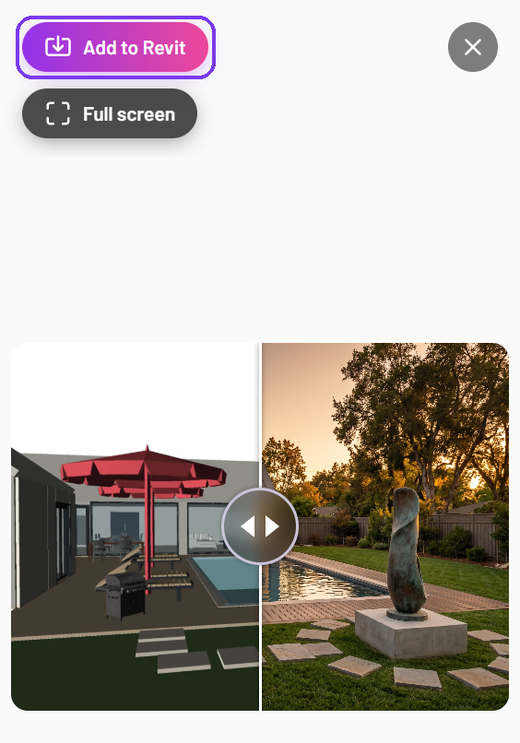
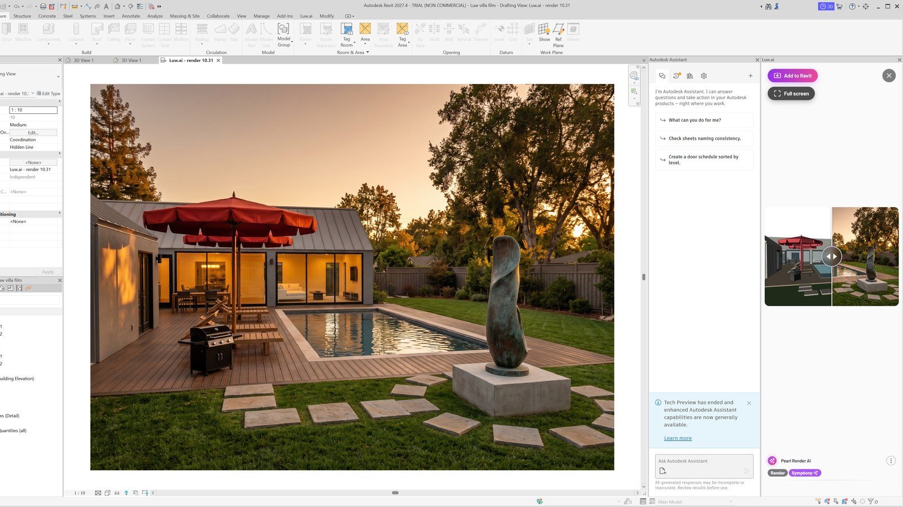
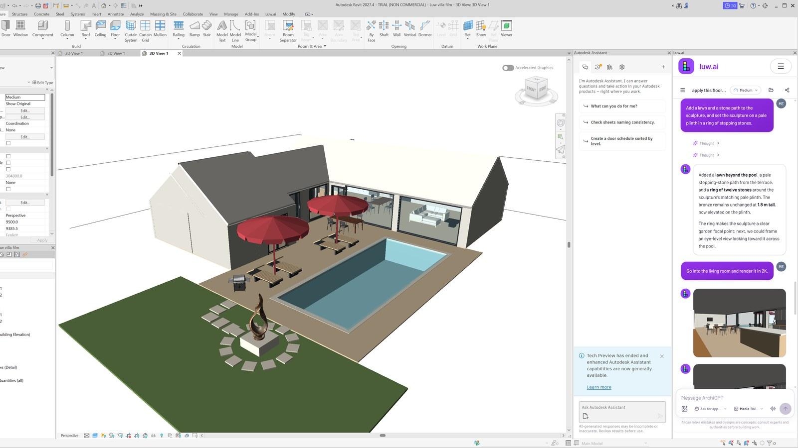
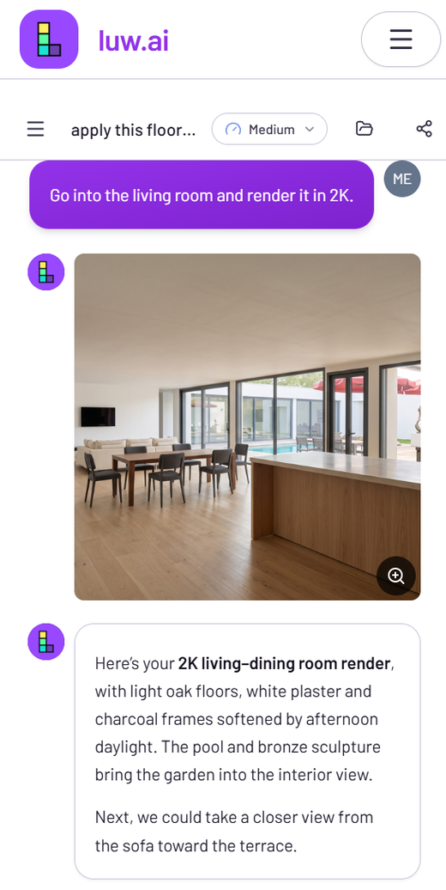

Luw.ai for Revit
Design a building by talking to ArchiGPT and watch it appear in your Revit project as walls, floors and roofs. Then render it, right inside Revit. No export, no extra app.
What you need
- Revit 2024, 2025, 2026 or 2027 on Windows. The free trial works too.
- A Luw.ai account. Each render uses tokens from your account: 1 token for one image.
- An internet connection. The renders are made on Luw.ai's servers.
- The Luw.ai add-in:
Luw.ai-Revit.zip. Download it here and unzip it into a folder.
Install the add-in
- Close Revit.
- In the unzipped folder, right-click
install.ps1and choose Run with PowerShell. It installs Luw.ai for your Windows user, for every Revit version you have. - Open Revit. The first time, Revit asks whether to load Luw.ai: choose Always Load.
Open Luw.ai and sign in
Open a project, then click Luw.ai on the Luw.ai tab of the ribbon.

The Luw.ai panel docks at the right of the view. It is the Luw.ai web app, made to work with Revit. Close it with its ×; the button opens it again where you left it. You can drag it anywhere, as any Revit panel.

Get your first render
-
Set up your view. Open a 3D view and frame it until you like the picture. What you see is what Luw.ai renders.
Tip: the Shaded or Realistic visual style gives better renders than Wireframe or Hidden Line.
- Click Render AI on the panel's home page: your Revit view is already in it. You don't need to save or export anything. Moved the camera? Click Capture Revit view on the picture to take the new view.
- Choose options if you like: Time of Day, Lighting, or a short Prompt such as “golden hour, warm light on the deck”. Or leave them on Auto.
- Click Generate Image with AI. One image uses 1 token. Your render is ready in about a minute. Click it to open it.
-
Compare and keep it. Drag the slider to compare the render with your view, then click Add to Revit at the top left.

-
That's it. The render is now in your project as a drafting view of its own, ready to place on a sheet. Revit opens it in a new tab; your 3D view stays open in its tab. To remove it, press Ctrl+Z once.

The render in its drafting view, next to the 3D view's tab.
More tools
Open the menu (☰) at the top of the panel for more tools, such as interiors, exteriors, sketch to render and video. Most tools start with your Revit view. With 3DGen AI you get a 3D model, and Add to Revit brings it into your project as a Generic Model, beside what is there.
Design a building with ArchiGPT
ArchiGPT is Luw.ai's design assistant. In Revit it builds what you describe straight into your project while you watch: real Revit walls with their openings, floors, and roofs, doors, windows, stairs and furniture in their own categories.
- Open ArchiGPT from the home page of the Luw.ai panel.
-
Say what you want. Describe the building, or drag a photo of a plan you drew on paper into ArchiGPT and write something like “Apply this floorplan as a villa.” ArchiGPT builds it in Revit: walls, rooms, doors and windows, the kitchen, furniture, a pool.

The villa in Revit, and the conversation that built it. - Change it by talking. “Give it a 35° gable roof”, “add a barbecue corner by the pool”, “lay out the sunbeds like this photo”. Only what changed is rebuilt. Select something in Revit first and ArchiGPT knows what “this” means. It knows your own elements too: “move the wall I drew 2 m east”, “what else is in the project?”
- Change it yourself, too. Move, rotate, mirror or delete what ArchiGPT built, or add elements of your own, whenever you like. Your changes stay when ArchiGPT builds again.
- Add materials. “Light oak floors, white plaster walls, a dark grey metal roof.” ArchiGPT puts real Revit materials on the model, and can have Pattern AI make a texture just for it. Switch the view to Realistic to see the textures.
- Add what no library has. “A bronze sculpture by the pool.” ArchiGPT designs it, 3DGen AI makes it a real 3D model, and it lands in your project.
-
Render it. Frame a 3D view in Revit and ask for a render, or ask ArchiGPT to go into every room and render each one. It shows what it will cost and waits for your Approve. Click a result to see it full size, or keep it in your project with Add to Revit.

Help
- I don't see the Luw.ai tab.
- Revit asked whether to load Luw.ai and it was told not to. Close Revit, run
install.ps1again, open Revit and choose Always Load. - The panel is empty or doesn't load.
- Luw.ai needs the internet. Check your connection, then close the panel and open it again with the Luw.ai button.
- The picture in the panel is an old view.
- Click Capture Revit view on the picture.
- Something went wrong.
- Send us the file
%LOCALAPPDATA%\Luw.ai\logs\plugin.log. - How do I remove the add-in?
- Close Revit, then right-click
uninstall.ps1in the unzipped folder and choose Run with PowerShell.